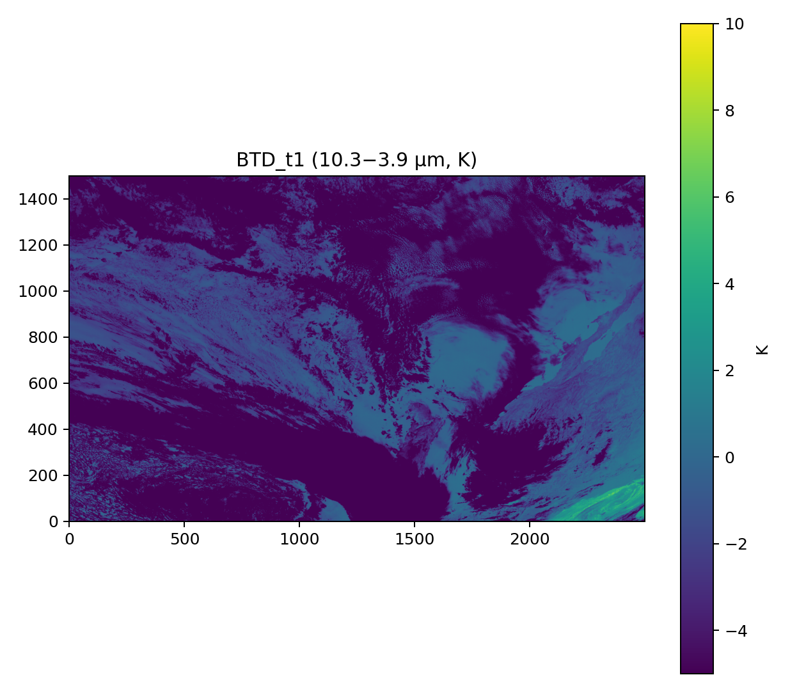

Prototype Viewer
Ready

This prototype swaps precomputed PNG rasters. Next step: draw a transect and compute edge motion (km/h).
Exploratory Figures


Notes
- Images are derived from ABI-L2-CMIPC (CONUS) NetCDF, GOES-18 (West).
- Positive BTD typically highlights low clouds/fog at night.